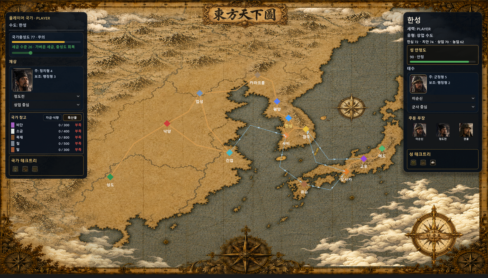
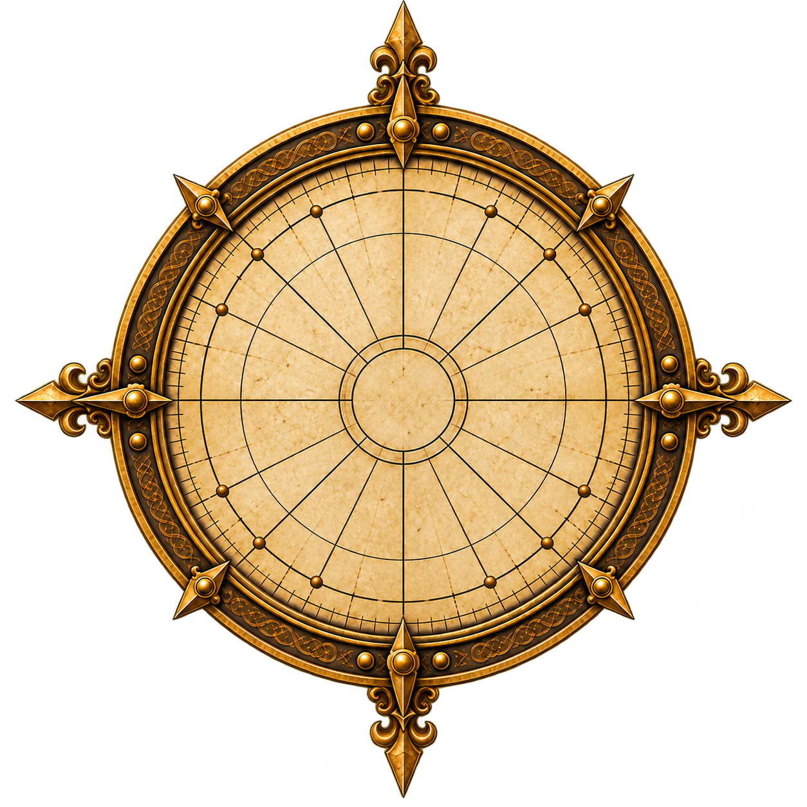
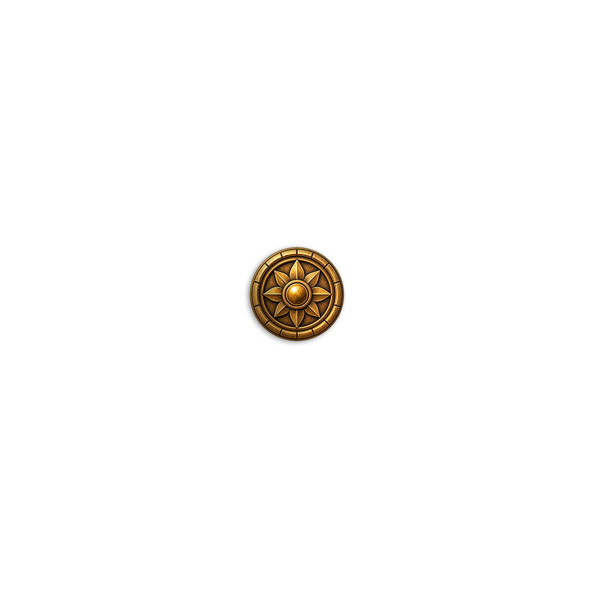
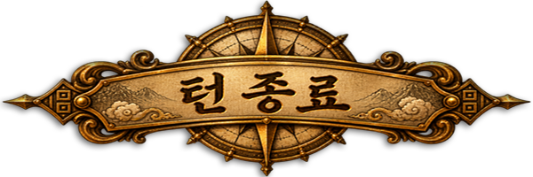

9번 튀던 화면이 멈췄다
월드맵 UI 1차 디자인 마감 기록
2026년 08월 25일동방천하도, 1차 완성
월드맵 UI 1차 디자인 작업이 끝났다. 좌측엔 국가 정보(국가 충성도, 세금, 재상, 국가 창고, 국가 테크트리), 우측엔 선택 도시 정보(민심·치안·상업·농업, 성 안정도, 태수, 주둔 무장, 성 테크트리)가 자리 잡았고, 중앙엔 한중일 지도 위로 도시 간 항로와 육로가 이어져 있다. 우하단엔 나침반 형태의 턴 종료 버튼이 놓였다.

여기까지 오는 과정은 크게 세 갈래였다 — 나침반을 정밀하게 다듬는 것, 16:9 마스터 지도로 전체를 재구축하는 것, 그리고 화면이 이유 없이 튀는 문제를 구조적으로 잡는 것.
나침반, 세 겹으로 나누다
턴 종료 컴퍹스는 이미 1차 구현이 되어 있었다 — 유효한 아군 턴이 끝나면 나침반이 2~3바퀴 돌다가 감속하며 정북(北) 방향에서 정확히 멈추는 연출이었다. 문제는 회전 로직이 아니라 시각적 정밀도였다. 나침반 전체를 하나의 이미지로 돌리다 보니 회전 중심이 살짝 어긋나면 눈에 다 보였다.
그래서 구조를 3레이어로 나눴다.
- Layer 1 — 외곽 나침반 원판: 완전 고정. 방위문자, 테두리, 장식까지 전부 포함.
- Layer 2 — 중앙 바늘: 이것만 360° 회전. 좌우·상하가 정확히 대칭인 별도 투명 PNG.
- Layer 3 — 중앙 문양/캡: 고정. 바늘의 회전축을 위에서 덮어서, 중심이 1~2픽셀 어긋나도 그 접합부 자체가 안 보이게 만드는 역할.


세 PNG의 캔버스 크기를 동일하게(190×190) 맞추고, 회전축을 정확히 중앙(50%, 50%)에 고정했다. 이렇게 하니 다음 작업은 회전 로직을 새로 만드는 게 아니라, 이미 성공한 회전 대상을 "나침반 전체"에서 "바늘 레이어 하나"로 갈아 끼우는 것으로 끝났다. 기존에 검증된 "나침반 1바퀴 완료 → 실제 턴 진행" 구조는 그대로 보존됐다.
이후 나침반은 한 단계 더 나아가서, 단순 장식이 아니라 실제 턴 종료 컨트롤로 승격됐다. 반투명 상태로 "턴 종료" 표시가 얹혀 있다가, hover하면 강조되고, 클릭하면 사라지고, 회전이 완료되면 다시 나타나는 흐름으로 다듬었다.

크기와 위치도 재조정했다. 190px에서 240px로 키우고, 오른쪽 패널 폭을 가로 방향으로 무조건 예약해서 나침반을 밀어내던 로직을 제거했다. 1920×1080 기준으로 오른쪽 여백 약 120px, 하단 여백 약 115~120px — 중심이 대략 (1680, 840) 근처에 오도록 자리를 잡았다.
16:9 마스터로 지도를 다시 짰다
새 지도 마스터를 4096×2304 PNG 단일 파일로 받아서, 씬을 새로 만들고 4분할 배치·카메라 경계 재설정·한중일 성 재배치·항로 재연결까지 순서대로 진행한 다음 실플레이 QA를 거쳐 Production으로 이식했다.
정보창도 이 과정에서 여러 차례 다듬었다. 좌/우 패널 상단 높이를 통일하고, ? 아이콘 대신 hover 도움말로 바꾸고, 민심·치안·상업·농업을 한 줄로 압축했다. 성 충성도라는 표현은 성 안정도로 정리하고 상태와 바 색상을 연결했다. 주둔 무장은 3열 얼굴+이름만 남겼다. 정책 선택이나 인물 임명 시에는 장황한 효과 설명 대신 인물과 대사가 뜨는 중앙 팝업으로 바꿨다.
가독성 조정도 있었다 — 큰 제목과 본문·수치 폰트를 +2pt씩 키우고, 턴 표시는 "154년 봄 1턴"처럼 간결하게, 재상·태수 카드의 중복 이름을 제거하고 재상 초상을 태수보다 한 단계 크게 배치했다. 국가 창고는 자금·식량 탭과 특산물 탭으로 나누고, 기본 탭은 자금·식량으로 시작하게 했다. 자원 앞 아이콘은 아직 준비가 안 돼서 당분간 색 사각형 placeholder로 대체했다.
좌우 HUD 최종 배치도 확정했다. 좌측 아군 턴 종료 버튼은 삭제하고(나침반이 그 역할을 흡수했으므로), 좌우 패널 하단에는 5×3 완성 기술 배지 슬롯을 만들어 15개 초과 시 세로 스크롤되게 했다. 이번 단계에서는 좌우 각각 샘플 3개만 채워뒀고, 실제 테크 데이터 연결은 다음 작업으로 넘겼다.
화면이 튀는 진짜 이유
디자인이 거의 자리를 잡았는데도 화면이 자꾸 튀는 문제가 남아 있었다. 나침반이 돌다가 멈칫하고, 그 순간 정보창에 과거 정보가 잠깐 나타났다 사라지고, 국가 창고의 자금·식량/특산물 탭을 누를 때마다 패널이 튀는 증상이었다.
처음엔 각 증상을 개별로 땜질하려 했지만, 영상을 프레임 단위로 뜯어보니 원인이 두 개가 겹쳐 있었다.
- 턴 종료 튐: Production이 턴 전환 중간 상태를 먼저 화면에 그리고, 그다음 순간 테스트 controller가 다시 정리하면서 한 프레임이 번쩍였다.
- 탭 전환 튐: 창고 탭을 자금·식량(4행)에서 특산물(5행)로 바꿀 때마다 내용 높이가 달라지고, 그때마다 패널 높이를 다시 계산하는 함수가 호출되면서 패널 전체가 재배치됐다.
즉 여러 개의 controller가 매 프레임 Production UI를 후처리하면서, 레이아웃 재계산과 텍스트 재작성 순서가 서로 충돌하고 있었던 것. 이건 가드를 하나 더 얹는다고 없어질 문제가 아니었다.
그래서 방향을 근본적으로 바꿨다 — W2-A14 Stable HUD Presentation Refactor.
- 좌/우 패널 높이를 런타임에 계속 재계산하지 않고, 고정 레이아웃 계약으로 잠갔다.
- 창고 탭은 두 탭 모두 같은 고정 높이를 쓰게 만들어서, 클릭해도 패널 크기 자체가 바뀌지 않게 했다.
- 턴 중간 상태를 숨겼다가 나중에 덮어쓰는 방식 대신, UI 표시값을 stable snapshot으로 유지하다가 새 턴 데이터가 완성된 순간 딱 한 번만 교체하는 방식으로 바꿨다.
- 매 프레임 반복되던 텍스트·레이아웃 재작성을 걷어내고, 남기는 건 visibility guard 정도로 최소화했다.
코드를 더 들여다보니 원인이 더 명확해졌다 — 창고 탭은 클릭할 때마다 자원 행 전체를 지우고 다시 만든 다음 곧바로 패널 크기 재계산 함수를 호출하고 있었고, 이 함수가 호출될 때마다 좌우 패널의 최소 크기·크기·위치가 전부 다시 계산되는 구조였다. 이런 구조라면 튀는 게 당연했다. 그래서 가드를 더 붙이는 대신 이 레이아웃 재생성 자체를 없앴다. 턴 전환 플래시도 지연 처리 방식이 아니라, 화면에 그려지기 직전 한 번만 실행되는 단일 표현 패스로 바꿨다 — Production이 그 프레임에 뭘 써놨든, 그려지기 직전에 딱 한 번 최종 상태로 정리하는 구조다.
앞으로
3레이어 나침반, 16:9 마스터 지도, 정리된 정보창, 그리고 튀지 않는 안정적인 HUD까지 — 월드맵 UI의 1차 디자인이 여기서 일단락됐다. 다음은 좌우 패널 하단의 기술 배지에 실제 테크트리 데이터를 연결하는 작업이 남아 있다.